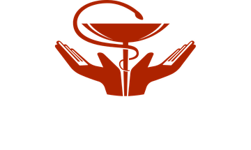
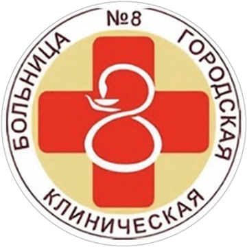

Медицинская карта активиста · № 8
Профсоюзный анамнез
история одного активиста


Конкурс видеороликов «Наш Профсоюз: история в кадре, награда — в путешествии»
Автор: Давыдова Наталья Владимировна
Первичная профсоюзная организация ГАУЗ ОЗП «ГКБ № 8 г. Челябинск»
Челябинская областная организация Профсоюза работников здравоохранения РФ